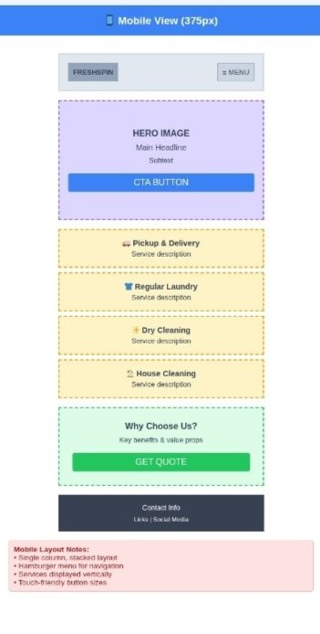
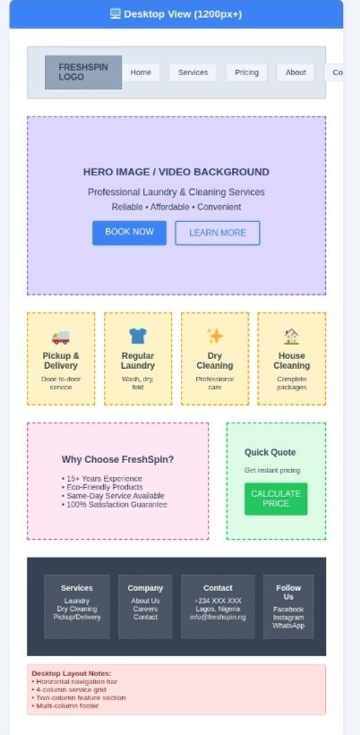

Site Name
FreshSpin Laundry
The name FreshSpin Laundry was chosen to reflect freshness, cleanliness, and a modern approach to laundry care. The brand suggests efficient washing and spinning cycles that leave clothes smelling fresh and feeling soft.
Optional Domain: freshspinlaundry.com
Site Purpose
The purpose of this site is to provide customers with detailed information about laundry and dry-cleaning services, pricing, and convenient pickup and delivery options. The website will also allow users to contact the business or schedule a service request online.
Scenarios
- How can I schedule a laundry pickup from my home?
- What are the prices for washing, ironing, and dry cleaning?
- Where is the nearest FreshSpin Laundry location?
Color Schema
The color palette will use refreshing, clean tones to convey trust and hygiene.
- Primary Color: #2C7BE5 (Bright Blue) – Used for headings, buttons, and accents.
- Secondary Color: #E8F0FE (Soft Blue-Gray) – Used for background areas.
- Accent Color: #F7C948 (Warm Yellow) – Used for call-to-action highlights.
Typography
The website will use Google Fonts for a modern, clean look.
- Headings: Poppins – bold, professional, and easy to read.
- Body Text: Open Sans – clear and highly readable for paragraphs.
- Logo / Highlights: Pacifico – elegant cursive for a friendly touch.
Wireframe
Mobile View
A stacked layout with a logo and navigation at the top, service highlights in the middle, and contact info at the bottom.
Desktop View
A horizontal navigation bar, hero banner with image and tagline, services section with three columns, and a footer with contact details.
